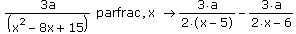
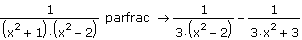

Partial Fractions |
To expand a quotient of polynomials into partial fractions, select the expression and either:
Press [Ctrl] [Shift] [.] and type the keyword "parfrac."
- or -
If the expression contains more than one variable, you must also type a comma, followed by the variable you want to perform the partial fractions decomposition with respect to, after "parfrac." Then press [Enter].
If the expression contains more than one variable, type a comma, followed by the variable for the partial fractions decomposition.

| Expressions With Irrational Roots |
By default, Mathcad performs a partial fractions decomposition over the field of rational numbers. That is, if the initial expression is a quotient of polynomials with rational coefficients, the polynomials in the result also have rational coefficients. For example,

To perform a further decomposition of one of the terms in the expression, apply "parfrac" to just that term and type the root of the denominator as an argument after "parfrac." For example, you can apply "parfrac" to the first term in the preceding result, whose denominator has  as a root, as follows:
as a root, as follows:
Note: Do not use the argument  with the original expression - just with the term whose denominator has
with the original expression - just with the term whose denominator has  as a root.
as a root.
Another method is to select Variable > Convert to Partial Fraction from the Symbolics menu. In this case the result will not automatically update if you make changes elsewhere in the worksheet.
This command does not expand any expression containing constants with decimal points.